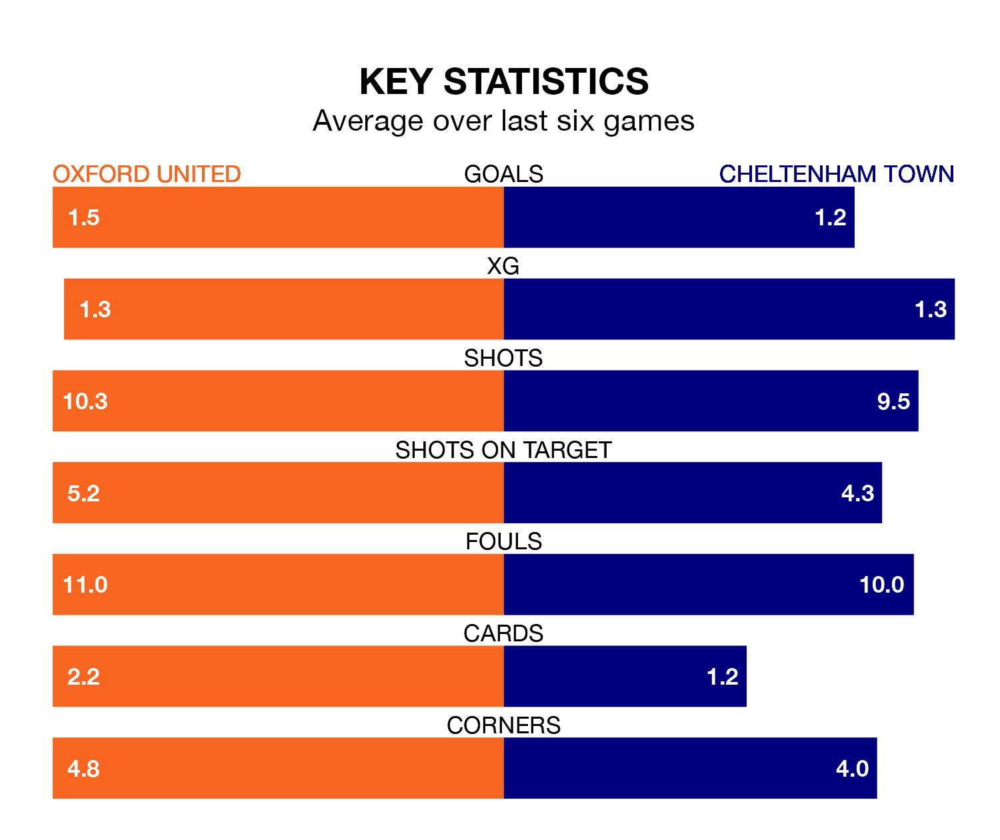

Oxford United host Cheltenham Town on Saturday at the Kassam Stadium in EFL League One.
In their last league match, on March 2, Oxford lost to Portsmouth 2-1 away, with their goal scored by Cameron Brannagan.
Cheltenham also lost, 3-1 at home against Charlton Athletic on Tuesday, with Liam Sercombe scoring their goals.
With 29 goals in 35 games so far this season, Cheltenham are scoring at below the league average rate with 0.8 goals per game. And they are conceding more than average, letting in 48 goals at a rate of 1.4 per game.
Oxford, meanwhile, are above average scorers, with 1.6 goals per game, compared to a league average of 1.3. They have conceded 1.3 goals per game.
In the last 10 years, Oxford and Cheltenham have played each other on eight occasions. Oxford won two of them, Cheltenham four, and they drew twice.
On average, the Us scored 1.4 goals and the Robins 1.5 in those matches.
Their last meeting was on November 25, when Cheltenham won 2-0 at home.
Town are 21st in the table after 35 games, of which they have won nine and drawn seven, earning 34 points.
United are 14 places ahead of the Robins in seventh, with 16 wins and nine draws putting them on 57 points.
The Us are in disappointing form in EFL League One, with one win and three draws from their last six games.
With two wins and two draws over that period, the away side's form is slightly better – they have taken eight points from 18, compared to the hosts' six.
Updated: 09:34 (UTC), 08/03/24